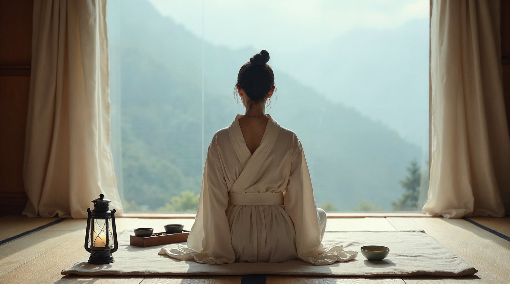

이종호 한의사 감수좋은꿈참사랑한의원 대표원장 (한의사 면허번호 19769)발행 2026-11-23 · 수정 2026-11-25
이 글의 차례
식당을 운영하면 마감과 정리, 정산까지 마치고 늦게 귀가합니다. 몸은 지쳤는데 오늘 매출과 내일 장보기 생각이 이어져 잠이 오지 않는다면, 마감 뒤 귀가까지의 흐름을 하루를 닫는 순서로 바꾸는 것부터 함께 살펴봅니다.
마감 시간은 몸을 쓰는 일과 머리를 쓰는 일이 한꺼번에 끝나는 때입니다. 몸은 하루 종일 서서 움직인 피로로 무겁고, 머리는 매출 숫자와 재료 주문, 직원 일정까지 계산하느라 아직 바쁩니다. 귀가 뒤 바로 눕기보다 머리를 먼저 내려놓고 몸을 데운 뒤 눕는 순서를 만들어 두면, 잠자리에 드는 시각이 조금씩 일정해지는 경우가 많습니다.
왜 이런 불편이 생길 수 있나요
- 마감 직전까지 바쁘게 움직이면 몸이 긴장한 상태로 귀가해 바로 잠들기 어려운 경우가 있습니다.
- 늦은 시간의 정산이나 휴대전화 확인은 머리를 다시 깨우는 계기가 될 수 있습니다.
- 마감 뒤 늦은 식사나 술 한 잔은 잠의 후반을 얕게 만들기도 합니다.
- 하루 종일 서서 일하면 다리가 붓고 허리가 뻐근해, 누웠을 때 자세를 자주 바꾸며 잠들기가 늦어지기도 합니다.
- 늦은 밤 찬 공기를 맞으며 귀가해 몸이 식은 채로 바로 누우면 잠이 얕다는 분도 있습니다.
- 쉬는 날이 적으면 피로가 쌓여 오히려 잠이 얕아지는 경우가 있습니다.
먼저 이렇게 여쭙니다
- 마감 후 집에 도착하는 시각은 보통 몇 시인가요?
- 귀가 뒤 잠들기까지 얼마나 걸리나요?
- 잠자리에서 일 생각이 자주 이어지나요?
- 마감 뒤 식사나 술은 몇 시쯤 드시나요?
- 다음 날 아침 몇 시에 일어나야 하나요?
- 하루에 몇 시간 정도 서서 일하시나요?
일상에서 먼저 해 볼 수 있는 것
- 정산과 다음 날 준비 목록은 가게에서 마치고 나오기
- 귀가 후 따뜻한 샤워와 가벼운 스트레칭으로 하루를 마무리하는 순서 만들기
- 잠들기 전 휴대전화로 매출을 확인하는 습관 줄이기
- 마감 뒤 식사는 양을 줄이고 술은 마시는 날을 정해 두기
- 쉬는 날에도 일어나는 시각을 크게 바꾸지 않기
예를 들어 밤 11시에 마감한다면 11시 반까지 정산을 끝내고 가게에서 내일 장보기 목록을 적어 둡니다. 집에 와서는 샤워, 가벼운 스트레칭, 조명 낮추기 순서로 30분을 보내고 그동안 매출 앱은 열지 않습니다.
상황별 예시
- 예를 들어 마감 뒤 직원들과 늦은 식사를 하며 술을 곁들이는 날이 일주일에 네댓 번인 경우, 술은 마시는 요일을 정해 횟수부터 줄이고, 식사는 밥과 국 위주로 양을 줄여 잠자리에 들기 두 시간 전쯤 마치는 것을 목표로 해 봅니다.
- 예를 들어 새벽 장보기 때문에 잠이 4~5시간밖에 안 되는 경우, 잠 시간을 억지로 늘리려 하기보다 장보기 뒤 오후 이른 시간에 20~30분 짧게 쉬고, 마감 뒤 잠들기까지 걸리는 시간을 줄이는 쪽으로 계획을 세웁니다.
- 예를 들어 잠자리에서 매출 앱을 보다가 숫자가 신경 쓰여 한 시간 넘게 뒤척이는 경우, 매출 확인은 다음 날 아침 정해 둔 시각에 한 번만 하기로 하고, 휴대전화는 침실 밖에서 충전해 봅니다.

스스로 점검해 보세요
- 귀가 뒤 잠들기까지 한 시간 넘게 걸리는 날이 일주일에 사흘 이상이다.
- 잠자리에서 매출이나 재료 주문, 직원 문제 생각이 자주 이어진다.
- 마감 뒤 식사가 잠들기 직전이고 양이 많은 편이다.
- 잠을 부르려고 술을 마시는 날이 예전보다 늘었다.
- 다리가 붓거나 허리가 뻐근해 누웠을 때 자세를 자주 바꾼다.
- 한 달에 온전히 쉬는 날이 이틀이 채 안 된다.
- 쉬는 날에는 한낮까지 몰아 자고, 그날 밤 잠이 더 늦어진다.
한의원에서 함께 살필 수 있는 경우
- 마감 뒤 긴장이 풀리지 않아 잠이 늦어지는 경우 생활 리듬과 긴장 정도를 함께 살핍니다.
- 늦은 식사와 음주로 잠이 얕은 경우 저녁 식사와 소화를 함께 살핍니다.
- 쉬는 날이 없어 피로가 쌓이는 경우 하루의 쉼과 몸의 상태를 함께 살핍니다.

첫 방문은 이렇게 진행됩니다
- 이야기 듣기: 영업시간과 마감 시각, 귀가 뒤 하는 일, 잠드는 모습, 쉬는 날의 생활을 먼저 충분히 듣습니다.
- 맥 짚기와 혀·배 살피기: 맥부터 짚어 지친 정도와 긴장을 살피고, 늦은 식사와 술로 속이 불편하다면 필요하다고 판단될 때 설진·복진을 더해 봅니다.
- 생활 기록 함께 보기: 마감 시각과 귀가 시각, 잠든 시각을 나란히 놓고, 잠이 늦어지는 날의 공통점(늦은 정산, 술, 손님이 많았던 날 등)을 함께 찾습니다.
- 방향 정하기: 상태에 맞춰 침이나 한약 상담 등을 정하고, 오래 서서 일해 다리와 허리가 불편하면 그 부분도 함께 살핍니다.
- 귀가 전 정리: 가게 일정에 맞춰 지킬 수 있는 저녁 순서를 함께 정합니다. 다시 오시면 그사이 잠과 마감 뒤 생활이 어땠는지 이어서 여쭙습니다.
얼마나 지켜보고 언제 상담할까요
- 정산을 가게에서 끝내고 귀가 뒤 30분 닫는 순서를 지키는 것을 2~3주 이어 가며 귀가 시각과 잠든 시각을 적어 봅니다.
- 그래도 잠들기까지 한 시간 넘게 걸리는 날이 일주일에 사흘 이상이고 한 달 넘게 이어진다면 상담을 받아 보세요.
- 술 없이는 잠들기 어렵다고 느끼거나 마시는 양이 점점 늘었다면 기다리지 말고 상담을 받아 보시길 권합니다.
이렇게 기록해 오시면 상담이 쉬워집니다
- 마감 시각, 귀가 시각, 잠든 시각
- 마감 뒤 먹은 음식과 술의 양
- 잠자리에서 떠오른 생각의 종류(매출, 직원, 장보기 등)
- 쉬는 날과 일하는 날의 잠 차이
이런 증상은 먼저 확인이 필요합니다
- 낮 동안 참기 어려운 졸음으로 운전이 위험한 경우
- 잠을 거의 못 자는 날이 며칠째 이어지는 경우
- 가슴 두근거림이나 숨 가쁨이 함께 있는 경우
- 한쪽 다리만 갑자기 붓고 아프거나 붉어지고 뜨거운 경우
- 기분이 크게 가라앉아 가게 일을 이어 가기 어려운 날이 2주 넘게 계속되는 경우
복용 중인 수면제나 신경안정제는 처방한 의사와 상의 없이 줄이거나 끊지 않습니다. 기분이 크게 가라앉고 극단적인 생각이 든다면 ☎ 109에 바로 도움을 요청하세요.
관련 글
- 저녁 식사와 술은 잠에 어떤 영향을 주나요?
- 걱정이 많아서 잠이 안 올 때는 어떻게 살피나요?
- 자기 전 목욕은 잠에 도움이 될까요?

여쭙는 것
- 마감 후 집에 도착하는 시각은 보통 몇 시인가요?
- 귀가 뒤 잠들기까지 얼마나 걸리나요?
- 잠자리에서 일 생각이 자주 이어지나요?
생활에서 해 볼 것
- 정산과 다음 날 준비 목록은 가게에서 마치고 나오기
- 귀가 후 따뜻한 샤워와 가벼운 스트레칭으로 하루를 마무리하는 순서 만들기
- 잠들기 전 휴대전화로 매출을 확인하는 습관 줄이기
한의원에서 함께 살필 것
- 마감 뒤 긴장이 풀리지 않아 잠이 늦어지는 경우 생활 리듬과 긴장 정도를 함께 살핍…
- 늦은 식사와 음주로 잠이 얕은 경우 저녁 식사와 소화를 함께 살핍니다.
- 쉬는 날이 없어 피로가 쌓이는 경우 하루의 쉼과 몸의 상태를 함께 살핍니다.
먼저 확인이 필요한 신호
- 낮 동안 참기 어려운 졸음으로 운전이 위험한 경우
- 잠을 거의 못 자는 날이 며칠째 이어지는 경우
- 가슴 두근거림이나 숨 가쁨이 함께 있는 경우
한눈에 보는 표
| 구분 | 핵심 |
|---|---|
| 여쭙는 것 | 마감 후 집에 도착하는 시각은 보통 몇 시인가요? 귀가 뒤 잠들기까지 얼마나 걸리나요? |
| 생활에서 해 볼 것 | 정산과 다음 날 준비 목록은 가게에서 마치고 나오기 귀가 후 따뜻한 샤워와 가벼운 스트레칭으로 하루를 마무리하는 순서 만들기 |
| 한의원에서 함께 살필 것 | 마감 뒤 긴장이 풀리지 않아 잠이 늦어지는 경우 생활 리듬과 긴장 정도를 함께 살핍니다. 늦은 식사와 음주로 잠이 얕은 경우 저녁 식사와 소화를 함께 살핍니다. |
| 먼저 확인이 필요한 신호 | 낮 동안 참기 어려운 졸음으로 운전이 위험한 경우 잠을 거의 못 자는 날이 며칠째 이어지는 경우 |
자주 묻는 질문
잠이 안 와서 술을 한 잔 하고 자는데 괜찮나요?
처음에는 졸음이 와도 밤 후반에 자주 깨고 잠이 얕아지는 분이 많습니다. 술에 기대는 날이 늘었다면 상담해 보시길 권합니다.
아침 장보기 때문에 잠이 짧은데 어떻게 하나요?
짧은 잠을 보충하는 방법보다 잠들기 전 흐름을 정리하는 쪽부터 함께 살펴봅니다.
마감 뒤 너무 배가 고픈데 아예 안 먹는 게 나을까요?
너무 배가 고프면 오히려 잠이 깨기도 합니다. 굶기보다 따뜻한 국이나 죽처럼 소화가 편한 음식을 조금 먹고, 먹은 뒤 바로 눕지 않는 편을 권합니다.
쉬는 날 몰아서 자면 피로가 풀리지 않나요?
한낮까지 몰아 자면 그날 밤 잠이 늦어져 다음 영업일이 더 힘들다는 분이 많습니다. 쉬는 날에도 일어나는 시각은 평소와 한두 시간 안쪽으로 두고, 모자란 잠은 이른 오후에 짧게 쉬며 채워 보세요.
가게 문을 닫는 날에 진료를 받을 수 있나요?
좋은꿈참사랑한의원은 토·일·공휴일에도 09:30~15:00(점심시간 없음)에 진료하고, 평일은 09:30~20:00(점심 13:00~14:00)입니다.
좋은꿈참사랑한의원은 재진 때 지난번 이야기부터 이어서 여쭙니다. 진료시간과 예약은 오시는 길에서 확인하세요.
어디서 상담받을 수 있나요?
좋은꿈참사랑한의원은 서울 동작구 만양로2길 2 신성빌딩 3층·5층(서울 동작구 상도동, 7호선 상도역 3번 출구 근처)에 있습니다. 한의사 3명(이종호 대표원장, 조영기 수석진료원장, 정원영 진료원장)이 진료합니다. 진료시간은 평일 09:30~20:00(점심 13:00~14:00), 토·일·공휴일 09:30~15:00이며, 방문 전 전화로 확인을 권합니다. 예약은 네이버 예약, 카카오톡 상담, 전화 02-815-7510로 받습니다.
이 글은 일반적인 건강 정보이며 개인의 진단이나 치료를 대신하지 않습니다. 증상이 있거나 복용 중인 약이 있다면 진료를 통해 확인하세요. 치료 효과는 개인마다 다를 수 있습니다.
작성 기준: 일반적으로 알려져 있는 건강 정보를 참고해 정리했습니다(대표원장 감수). 증상 기록은 1~2주 동안 하루 1회, 비슷한 시간에 적어 오시면 지난 상태와 비교하기 쉽습니다.